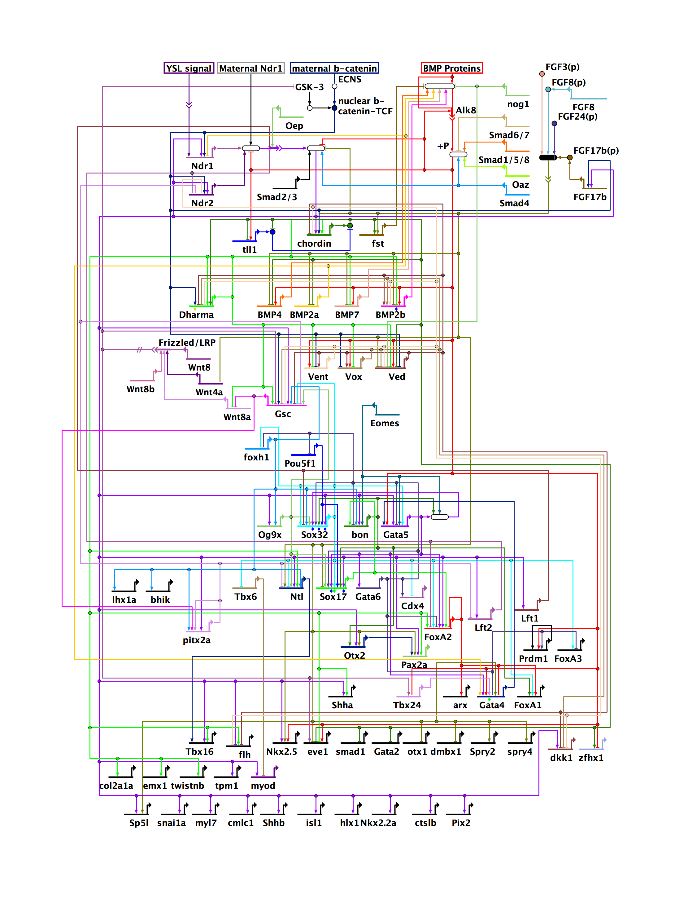
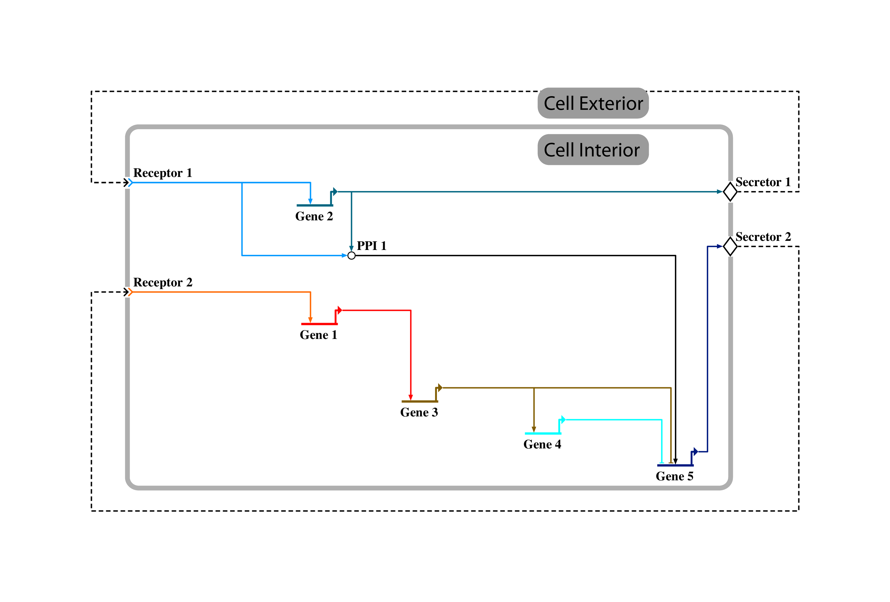
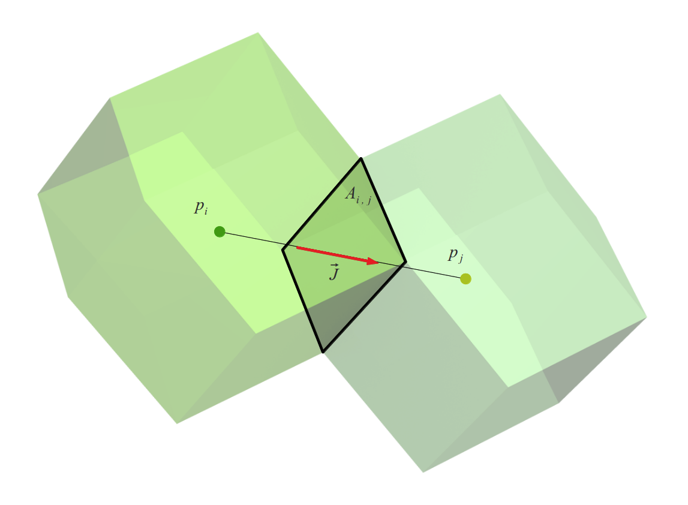
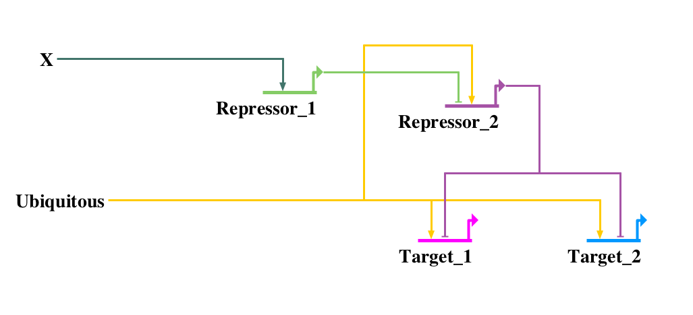
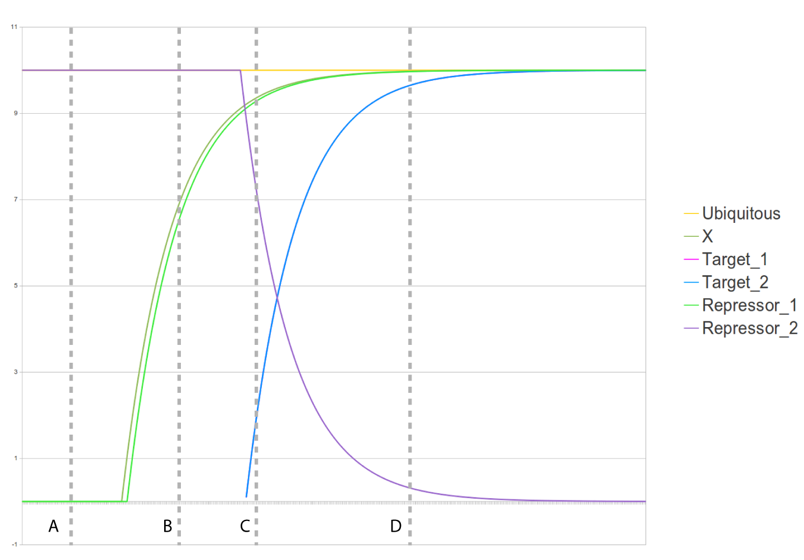
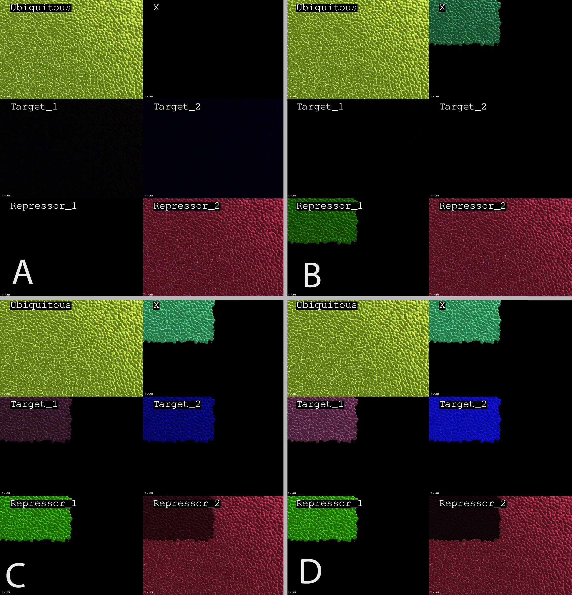

4. MECAGEN Model of Molecular and Genetic Regulation and Signaling
Situation of Chapter 4 in the methodological workflow.
The goal of this chapter is to briefly explain the principles of gene regulatory networks (GRNs), describe the components of GRN models, and give examples (Fig. ). In the present work, our particular objective was to design a simple and easily computable model of the molecular and genetic interactions that occur during development. This domain is a subject of intense research , at the crossroads between bioinformatics, systems biology and chemical kinetics; nonetheless, we believe that relevant insight can already be gained by using simple rules. We articulate our model around three types of rules:
rules driving the dynamics of intracellular gene/protein reactions
rules driving the dynamics of cellular secretion and transduction
rules driving the dynamics of extracellular reactions, transport and diffusion
These rules are expressed in a chemical kinetic framework by ordinary differential equations (ODEs) of the type \(dp/dt=f(p,g,q,r)\), where \(p\) represents protein concentrations, \(g\) gene expression level, \(q\) external ligands, and \(r\) membrane receptors. Extracellular reactions, transport and diffusion of ligands are also taken into account via partial differential equations (PDEs) involving \(\partial q/\partial t\) and fluxes \(\vec{J}=-D\vec{\nabla}q\).
To facilitate the specification of the parameters of molecular and genetic regulation, we interface the model with the BioTapestry software developed by W. Longabaugh and H. Bolouri at the Eric Davidson Lab, Caltech (Fig. ). This software has been adopted by the developmental biology community as the standard tool to visualize gene regulatory networks. We use it to draw our own GRN and add different module parameters, then export it as an XML file used as an input into our model.

Example of BioTapestry representation of a developmental gene regulatory network (GRN) in the zebrafish. Figure from Chan et al. (2009) .

Example of abstract gene regulatory network (GRN) produced for this study using the BioTapestry software. This GRN illustrates the typical molecular/genetic regulation and signaling components used in MECAGEN: protein-protein interactions (PPI), genes and their cis-regulatory elements (Gene X), signal secretion module (Secretor X), signal transduction module (Receptor X). The solid arrows in the cell interior represent intracellular proteins; the dashed arrows outside the cell membrane represent extracellular ligands. Practically, the topology and parameters of the GRN are all specified by the user of BioTapestry, then an XML file is saved and can serve as an input into the model.
4.1. Intra-Cellular Gene/Protein Reactions
To simplify the interactions inside the cell, we restrict the variables to real-valued quantities \(\mathbf{p}=\{p_a\}\) representing the different proteins \(\{P_a\}\), with \(a=0...N_p\!-\!1\), and binary states \(\mathbf{g}=\{g_b\}\) representing the expression levels of genes \(\{G_b\}\) involved in the GRN, with \(b=0...N_g\!-\!1\). Note that \(p_a\) can stand either for an actual number of molecules or for a concentration of molecule type (i.e. the number divided by the volume of the cell). This can be justified by assuming that at every stage of the early development each cell occupies about the same volume as the other cells, and also considering that the extracellular space belongs to the Voronoi territories of the cells (i.e. that the abstract borderline between two cell territories is running along the middle of their interstitium). Moreover, from one stage to the next, when a cell divides, the quantities of various protein types that it contains are roughly divided by two, like its volume, thus the concentration levels can be considered continuous functions of time even through divisions and stage transitions.
The role of RNA is bypassed here, as transcription and translation are construed as a single process. Thus in the following, the term protein denotes a unique molecule type synthesized by a corresponding gene, whether it is actually a protein or mRNA. Then, this protein may either react in a protein-protein interaction, or act as a transcription factor reacting on a gene regulatory element.
Here, each gene \(G_b\) produces a single protein type \(P_{a=b}\), but on the other hand there can be more protein types than genes, i.e. \(N_g \leq N_p\). This is because the GRN model only covers a small part of the whole genome and some proteins present in the cell can originate from extracellular signaling by neighboring cells. Proteins synthesized internally are in the same order as the genes in the interval \([0, N_g\!-\!1]\), then proteins of external origin are indexed in the interval \([N_g,N_p\!-\!1]\), if it is not empty. Protein concentrations \(\mathbf{p}\) evolve according to three rules:
protein-protein interactions (Section 4.1.1)
synthesis by encoding genes (Section 4.1.2)
degradation by the molecular environment (Section 4.1.3)
Conversely, gene activities are regulated by the proteins via Boolean functions representing a logical combination of promoters and repressors (Section 4.1.4).
4.1.1. Protein-Protein Interactions
Here we consider only protein-protein reactions involving two reactants and one product, generally expressed by:
Further simplifying assumptions involve uniform stochiometric coefficients \(\alpha_0 = \alpha_1 = 1\), and one of the two protein reactants in much greater concentration than the other, e.g. \(p_0 \gg p_1\), in which case the rate equation boils down to a first-order type:
$$\frac{dp_2}{dt} = -\frac{dp_1}{dt} = k' p_1$$
where \(k' = kp_0\) is the new pseudo-coefficient of the variation. Naturally, this very simple schema has important limitations. Yet, when applied to many nodes of a large network of molecular interactions inside each cell, and also combined with the other regulatory reactions described below and spatial diffusion by cell-to-cell signaling, it can already give rise to complex spatiotemporal dynamics in cellular tissue.
4.1.2. Synthesis by Encoding Genes
We assume here that if a gene \(G_b\) is active, i.e. \(g_b = 1\), the concentration \(p_b\) of the protein \(P_b\) that it encodes simply increases with a constant rate \(\gamma_b\), which is characteristic of the gene:
$$\frac{dp_b}{dt} = \gamma_b g_b$$
4.1.3. Degradation by the Molecular Environment
In addition to specific protein-protein interactions and gene-to-protein synthesis, proteins \(P_a\) are also degraded by various molecular elements present in the cell. We model this process by another simple equation, based on a constant degradation coefficient \(\kappa_a\) characteristic of the protein:
$$\frac{dp_a}{dt} = -\kappa_a$$
Up to this point, combining the three laws above, the extended protein equations read:
(assuming that they are both synthesized by genes, i.e. \(N_g \geq 2\)). In the sections below, we will add more terms coming from transduction and diffusion mechanisms, which represent the communication with the cell's exterior.
4.1.4. Cis-Regulatory Boolean Model of Gene Expression
The activity of a gene \(G_b\) is enhanced by the presence of certain promoting transcription factors (TFs, subsumed under the term protein here) and/or the absence of certain repressing TFs. Both types of TFs bind to the cis-regulatory sites of the gene, which are regions of the DNA near the gene sequence. As multiple TFs \(P_a\) can potentially participate in the regulation of a cis-regulatory module \(G_b\), something we denote by \(P_a \curvearrowright G_b\), Boolean logic is a well-suited schematization of these interactions . To minimize the number of variables, we represent the potential participation of a TF combined with its effective presence/absence in a regulatory module by a unique matrix of Boolean variables \(\mathbf{\Gamma}=\{\Gamma_{ab}\}\), which is globally indexed by \(a=0...N_p\!-\!1\) and \(b=0...N_g\!-\!1\), and depends on concentration levels \(\mathbf{p}\):
where the \(\theta_{ab}\) parameters are concentration thresholds. The activity of gene \(G_b\) is then determined by the Boolean output of a logic function \(f_b\), which is a combination of the Boolean operators AND, OR, and NOT:
For example, if \(f_b\) is a pure AND operator, then all promoters must be present and all repressors absent for the gene to be activated. If it is a pure OR operator, then a single promoter suffices to activate \(G_b\).
4.2. Signal Secretion and Transduction Modules
Cells in the developing embryo communicate through various means. One of the most common mechanisms are the secretion (typically by exocytosis) and the transduction (via receptors) of various molecules, such as proteins or metabolites, out of their physical domain through the cell membrane. The interfacing module connected to the GRN that internalizes and externalizes these molecules, globally denominated ligands, is presented in this section.
4.2.1. Signal Secretion Module
Ligands can be externalized from the cellular domain by means of secretion. A gene output that is connected to the signal secretion module in the GRN sends a certain quantity of its synthesized ligand \(P_a\) into the space between cells called interstitium, creating a concentration \(q_a\) of externalized ligand \(Q_a\) (which denotes the same molecule type as \(P_a\), but outside the cell membrane) with a rate coefficient \(\sigma_a\) characteristic of ligand \(a\). This can be represented by the reaction:
where \(s_a\) denotes this rate of secretion. Some externalized ligands diffuse to great distances compared to a typical cell size, while others remain attached to the cell membrane and affect only neighboring cells. Both scenarios are treated in the section below about extracellular dynamics.
4.2.2. Signal Transduction Module
Conversely, an extracellular signal is transduced into an intracellular protein through a signal transduction module. Three molecular actors are involved here: a receptor protein \(R_{ab}\) on the membrane, the extracellular ligand \(Q_a\) binding to the receptor, and the transduced protein downstream of the receptor \(P_b\), which may or may not be the same molecular type as the ligand, i.e. \(a=b\) or \(a\neq b\) in our indexing of proteins. The transduction module is active simply if its receptor is present in the cell membrane. The receptor and ligand may or may not be consumed during this process: the receptor molecule can either stay in the membrane or disappear (e.g. internalized at the same time), while the ligand molecule can either be recycled or disappear from the interstitium (e.g. internalized or degraded). The following generic reaction summarizes these possible scenarios:
where \(\rho_{ab}\) is the concentration of receptor in the membrane, assumed much greater than \(q_a\) i.e. approximately constant, \(\epsilon_a\) is a binary parameter equal to 1 if the ligand is consumed during the transduction process, and \(d_a\) denotes the rate of transduction. In sum, taking into account the effects of both secretion and transduction, the total variation of external ligand \(Q_a\) is given by:
4.3. Extra-Cellular Reactions, Transport and Diffusion
Various detailed models of the spatial configuration of the intersitium have been elaborated (e.g. ), but we prefer using here the abstract graph of neighborhood relationships (derived from a Delaunay triangulation), which was described in section 3.2.2, to serve as the infrastructure of ligand diffusion. Ligands diffuse in the interstitial regions between cells, delimited by their membranes, and the neighborhood graph connecting the centers of the cells is the dual representation of this space. This network also offers a spatial representation of the embryo that is robust with respect to the deformation of the multicellular assembly.
The macroscopic dynamic describing the diffusion of molecules is based on Fick's law. It states that the ligands move from regions of high concentration to regions of low concentration with an amplitude proportional to the spatial gradient of the concentration. Generally, the flux \(\vec{J}_a\) measuring the quantity of extracellular ligand \(Q_a\) that passes through a small section of space during a small time interval is given by:
$$\vec{J}_a = -D_a \vec{\nabla}q_a $$
where \(D_a\) is the diffusion coefficient of the ligand and \(q_a = q_a(x,y,z)\) its concentration field. In our network of cells, \(Q_a\) flows on the edges between each node \(i\) and its neighbors \(j\) (in one direction or the other). Denoting by \(q_{a,i}\) the concentration of \(Q_a\) localized near the surface of cell \(i\), and by \(\vec{J}_{a,ij}\) the flux of \(Q_a\) between \(i\) and \(j\), we can write the discrete approximation:
where \(r_{ij}\) is the distance between \(i\) and \(j\), and \(\vec{u}_{ij}\) the unit vector from \(i\) to \(j\) (Fig. ). Note that this expression is invariant by reversal of direction, i.e. \(\vec{J}_{a,ij} = \vec{J}_{a,ji}\): it yields the same absolute gradient vector irrespective of the viewpoint, which is consistent with the existence of a unique concentration field of \(Q_a\) between \(i\) and \(j\).

Schema of the flux of ligand. Here, \(\vec{J}\) represents \(\vec{J}_{a,ij} = \vec{J}_{a,ji}\), the flux of ligand \(Q_a\) between the cellular volumes occupied by neighboring particles \(i\) and \(j\).
The temporal evolution of the concentration is determined by the continuity equation, which is a local form of conservation law. The divergence theorem gives the integral form of the continuity equation, applied on the volume of the cell. Its continuous expression reads:
where \(\vec{dA}\) is the normal vector of the closed surface of the cell, \(s_a\) is the source term corresponding to the rate of ligand produced by secretion, and \(d_a\) is the sink term corresponding to the rate of extracellular ligand \(Q_a\) disappearing by the transduction activity of the cell. Finally, the discrete approximation of this closed surface integral is based on the topological neighbor list \(\mathcal{N}^t_i\) (defined in Section 3.2.2) as follows:
This section offers a glimpse of the possibilities of our molecular/genetic regulation and signaling model through simple idealized examples. We follow here E.H. Davidson's paper Emerging properties of animal gene regulatory networks, which describes various small GRN subcircuits and show their involvement in embryonic development. This section focuses on one of them: the double negative gate.
This first example is a part of the sea urchin embryo's GRN , in which it allows the activation of a series of genes in a specific region of the embryo under the control of localized expression (represented by protein X in Figs. -). The interesting feature of this circuit is that protein X does not directly promote the set of downregulated genes Target1 and Target2, but rather inhibits an inhibitor of these genes (Repressor1 and Repressor2). The net effect is that target genes are expressed in a particular region of the embryo and shut down everywhere else.

Double negative gate GRN subcircuit. We generated this network map with the BioTapestry software from the input file of our experimental model.
We illustrate the dynamics of this particular motif in an artificial cell population comprising 4,886 cells laid out in a two-cell-deep planar configuration. The cells are immobile as they are in an equilibrium state and no active forces are present. In the beginning, a self-descriptive Ubiquitous protein in all cells activates at the same time the target genes Target1 and Target2 and their repressor Repressor2, so that only the Repressor2 encoded protein is expressed ubiquitously (Fig. A, Fig. A). At a later point in time, protein X is introduced in one region of the cell population by artificially switching its concentration rate in these cells to a constant value of 0.1 unit per time step. In parallel, all proteins have a similar degradation rate of 0.99 unit per time step so that the X concentration tends toward an equilibrium quantity of 10 units. As soon as the X concentration exceeds the threshold \(\theta_{\mathrm{X,Rep1}}\) of the cis-regulatory element of Repressor1 (\(\theta_{\mathrm{X,Rep1}} = 1\)), the Repressor1 protein starts to be produced at a rate of 0.1 unit per time step (Fig. B, Fig. B).
Once the concentration of protein Repressor1 exceeds, in turn, the threshold on the cis-regulatory element of Repressor2 (\(\theta_{\mathrm{Rep1,Rep2}} = 9\)), the gene state of Repressor2 switches to 0 via the AND Boolean function relating the Repressor1 and Ubiquitous TFs. Finally, the concentration of Repressor2 protein, which is no longer produced by its encoding gene, decreases by degradation. Once it passes below the concentration threshold on the sites of genes Target1 and Target2 (\(\theta_{\mathrm{Rep2,Tar1}} = 9\) and \(\theta_{\mathrm{Rep2,Tar2}} = 9\)) via another AND operator, the target genes start being expressed in the region of the X protein (Fig. C, Fig. C). The time evolution of all proteins involved in region of X is shown in Fig. , and their spatial map in Fig. and Movie .

Evolution of the proteins concentration in the region where X is expressed. See text for the explanation of the curves' profile. The tagged vertical bars A, B, C, and D indicate the timing of the snapshots shown in Fig. . The curve of Target1 (pink) is hidden by the curve of Target2 (blue) as their dynamics is exactly the same.

Spatial evolution of the protein concentration in the double negative gate experiment. The letters correspond to the bars of Fig. . Each image is composed of 6 simultaneous views of the simulated cell population. Colors represent protein types and shades represent their concentrations (dark for low, bright for high). The top left corner of each image is the region where protein X is artificially secreted.Real-time representation of the simulation in the double negative gate experiment. Each image is composed of 6 simultaneous views of the same simulated cell population. Colors represent protein types and shades represent their concentrations (dark for low, bright for high).